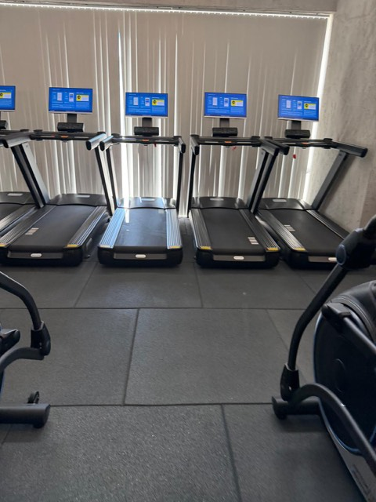
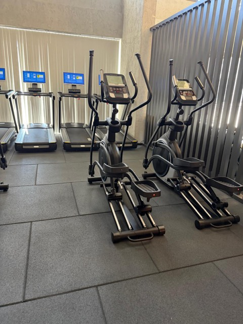

"Zone 2" = kalbin orta-hafif çalıştığı, konuşabildiğin ama şarkı söyleyemediğin tempo. Karın çevresindeki (viseral) yağı en verimli yakan kardiyo türü budur — yorucu olan değil.
Hazır
30:00
3 dk ısınma · 24 dk sabit tempo · 3 dk soğuma
Hangi alet?

Koşu bandı — eğimli yürüyüş (ilk tercih)
Koşma yok (düz taban için darbe yükü fazla). Bunun yerine eğim ver: yürüyüş olduğu için eklem yükü düşük, eğim sayesinde nabız hedefe çıkar.
Hız
5.5 – 6.5 km/s
Eğim
%6 ile başla, nabız yetmiyorsa %8–10'a çık
Eller
Tutamaklara tutunma; tutunursan eğimin anlamı kalmaz

Eliptik (alternatif)
Ayak pedallardan hiç kalkmaz; sıfır darbe. Ayak tabanında ağrı olan günlerde bunu seç. Direnç 6–8 civarı, tempo rahat.
Sıkılırsan böl: 12 dk bant + 12 dk eliptik.
Doğru tempoda mısın?
Konuşma testi
Tam cümle kurabilirsin ama nefes nefese. Rahat sohbet edebiliyorsan biraz hızlan; iki kelimeden fazla söyleyemiyorsan yavaşla.
Nabız
110–130 arası. Saat varsa bak; yoksa konuşma testi yeterli.
Ter
10. dakikada hafif terlemeye başlarsın. Sırılsıklam olmak hedef değil.
Akış
Isınma0–3 dk Eğimsiz, 4.5 km/s.
Sabit tempo3–27 dk Hız ve eğimi ayarla, sonra dokunma. Aynı tempoda kal.
Soğuma27–30 dk Eğimi sıfırla, 4 km/s.
Sonrasında 2 dk baldır esnetme (duvara dayanıp topuk yerde, 30 sn × 2 taraf). Düz tabanda baldır kısalması yaygın.